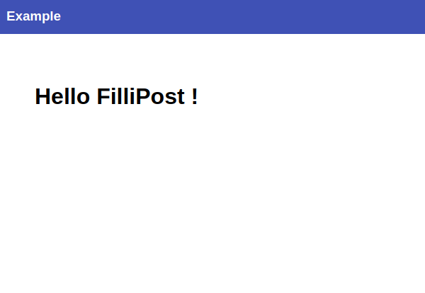

Создайте проект в каталоге FilliEx.
$ fillipost-cli create your_path/FilliEx
$ fillipost-cli.bat create your_path/FilliEx
Перейдите в папку your_path/FilliEx/patterns/. Создайте файл main.liquid.
Скопируйте и вставьте следующий код:
<meta name="viewport" content="width=device-width, initial-scale=1"> <meta charset="UTF-8"> <title>{{ post.name }}</title> <link href="https://fonts.googleapis.com/css?family=Roboto:900,400" rel="stylesheet"> <link rel="stylesheet" type="text/css" href="./resources/style/main.css"> {% include 'head.liquid' %} <div id="page-content">{{ post.content }}</div>
Перейдите в папку your_path/FilliEx/snippets/. Создайте файл head.liquid.
Скопируйте и вставьте следующий код:
<link rel="stylesheet" type="text/css" href="./resources/style/head.css">
<div id="page-head"> <div id="page-head--title"><h3>Example</h3></div> </div>
Перейдите в папку your_path/FilliEx/resources/style/. Создайте файлы head.css и main.css. Скопируйте и вставьте в main.css следующий код:
Скопируйте и вставьте в head.css следующий код:
Перейдите в папку your_path/FilliEx/posts/. Создайте файл example.md.
Скопируйте и вставьте следующий код:
---
{
"post": {
"name": "Example",
"pattern": "main.liquid"
}
}
---
# Hello FilliPost !
Собирите проект командой build
$ fillipost-cli build your_path/FilliEx
$ fillipost-cli.bat build your_path/FilliEx
Перейдите в папку your_path/FilliEx/build/. Откройте в браузере файл example.html
